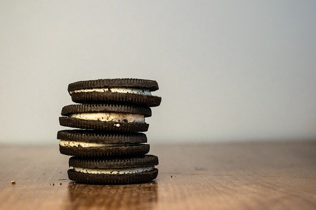
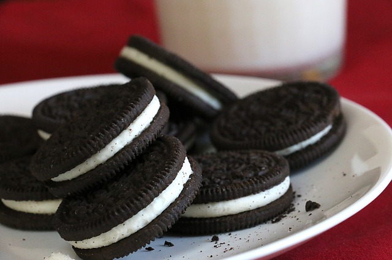

Oreo is an American sandwich cookie consisting of two (usually chocolate) wafers or biscuits with a sweet crème filling. Introduced on March 6, 1912, Oreo is the best-selling cookie brand in the United States. The Oreo cookie in the twenty-first century became the number one selling cookie globally.As of 2018, the version sold in the U.S. is made by the Nabisco division of Mondelez International.
Oreo cookies are available in over one hundred countries. Many varieties of Oreo cookies have been produced, and limited-edition runs have become popular in the 21st century.
In 1898, several baking companies merged to form the National Biscuit Company, also called Nabisco. This was the beginning of the corporation that would create the Oreo cookie. In 1902, Nabisco rolled out Barnum's Animal Crackers for the first time, making them famous by selling them in a little box designed like a circus animal cage that featured an attached string so that the box could be hung on Christmas trees.
In 1912, Nabisco had an idea for a new cookie, though it wasn't exactly its own—two chocolate disks with a creme filling in between had been done already by the Sunshine Biscuits company in 1908, which called the cookie Hydrox. While Nabisco has never named Hydrox as its inspiration, the Oreo cookie invented four years after the world was introduced to Hydrox closely resembled the biscuit that preceded it: two decorated chocolate discs with white creme sandwiched between them.
Despite its potentially suspicious origination, the Oreo made a name for itself and quickly surpassed the popularity of its competitor. Nabisco made sure to file for a trademark on the new cookie soon after its creation on March 14, 1912. The request was granted on August 12, 1913.